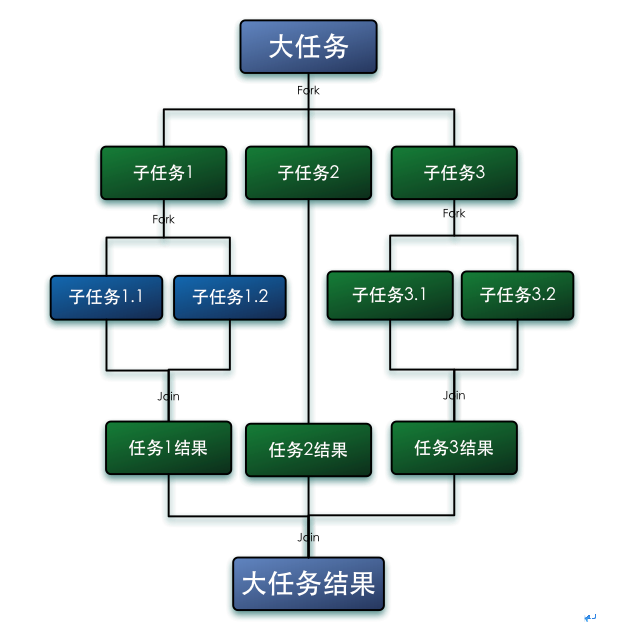

JAVA并发包简介
J.U.C框架是jdk1.5引入的。主要包含：
- Executor框架(线程池,Callable,Future),任务的执行和调度框架;
- AbstractQueueSynchronizer(AQS框架),并发包中实现锁和同步机制的基础,AQS的以CAS和volatile为基础实现的;
- Locks&Condition(锁和条件变量),比synchronized,wait,notify更方便和强大的锁机制；
- Synchronizers(同步器),主要用于协助线程同步,有CountDownLatch(闭锁),CyclicBarrier(栅栏),Semaphore(信号量),Exchanger(交换器);
- Atomic Variables(原子变量),方便在多线程环境下无锁进行原子操作。
- BlockingQueue(阻塞队列),如果队列满则入队操作将阻塞知道有空间可用,如果阻塞队列空了,则出队操作将阻塞直到有元素可用;
- Concurrent Collections(并发容器),主要为
ConcurrentHashMap、CopyOnWriteArrayList。 - Fork/Join并行计算框架,JDK1.7引入,方便利用多核平台计算能力,简化并行程序的编写。
- TimeUnit枚举,提供可读性更好的线程暂停操作,以及方便的时间单位转换的方法;
Executor 框架
callable接口
1 |
|
在jdk5之前我们只有一个Runnable接口,用来定义任务。但是Runnable接口的run()方法是没有返回值的,也不能抛出检查异常,有时候会不方便。
现在可以用Callable接口,可以抛出检查异常以及通过ExecutorService 去执行ExecutorService.submit() 方法将返回一个 Future 对象（待完成的任务结果对象），Future.get() 方法可获取结果。
Future接口
Future表示异步任务的结果,Future提供了异步任务查询,任务取消,获取任务结果等方法；
1 | public interface Future<V> { |
FutureTask类
表示异步计算任务；同时实现了Runnable和Future接口,因此可以直接交给Thread执行,并获取结果；
1 | public class science { |
Executor接口
Executor接口为线程调度的最顶层接口,只提供了一个用于执行任务的execute()方法；
ExecutorService接口
此接口继承自Executor接口,提供更加强大丰富的线程池控制方法,比如 shutdown() 用于平滑关闭线程池，submit() 用于提交 Callable 任务（相比 Runnable 任务，它可以有返回值、可以抛出异常）.1
2
3
4
5
6
7
8
9
10
11
12
13
14
15
16
17
18
19
20
21
22
23
24
25
26
27
28
29
30
31
32
33
34
35
36
37
38
39
40
41
42
43
44
45
46
47
48
49
50
51
52
53
54
55
56
57
58
59
60
61
62
63
64
65
66
67
68
69
70
71public interface ExecutorService extends Executor {
/**
* 关闭线程池 (设置 shutdown 标志位)，执行该方法后线程池将不会再接收新的任务
* 但是线程池也不会等待未完成的任务继续执行，这个应该交给 awaitTermination().
*/
void shutdown();
/**
* 关闭线程池 (设置 shutdown 标志位并调用 interrupt() 中断任务)，中断不一定奏效
* 因此，我们在编写 Runnable/Callable 任务时一定要注意处理好 interrupt 中断标志.
* @return List<Runnable> 返回还未开始执行的任务列表
*/
List<Runnable> shutdownNow();
/**
* 判断线程池的 shutdown 标志位是否已设置，即是否执行了 shutdown()、shutdownNow().
*/
boolean isShutdown();
/**
* 判断线程池的 shutdown 标志位是否已设置并且所有任务是否都已完成，如果是才返回 true.
*/
boolean isTerminated();
/**
* 等待线程池中的任务完成执行 (前提是设置了 shutdown 标志位)，该调用将阻塞调用线程.
* 如果任务都已完成则返回，或者发生超时，或者执行线程收到中断，以先发生的事件为准
* @param timeout 超时时间，为 0 或 -1 也不代表永久等待，而是立即返回
* @param unit 时间单位，java.util.concurrent.TimeUnit 枚举类
* @return boolean 如果线程池中的任务都已完成执行，则返回 true，否则返回 false
* @throws InterruptedException 当收到中断信号时将清除中断位，并抛出该异常
*/
boolean awaitTermination(long timeout, TimeUnit unit)
throws InterruptedException;
/**
* 提交 Callable 任务，该调用将返回一个 Future 对象，用于控制任务的执行结果.
* @param task 要执行的任务
* @return Future<T> 返回 Future<T> 结果对象
*/
<T> Future<T> submit(Callable<T> task);
/**
* 提交 Runnable 任务，该调用将返回一个 Future 对象，任务完成时调用 get() 将返回 result.
* @param task 要执行的任务
* @param result 任务完成时返回的结果
* @return Future<T> 返回 Future<T> 结果对象
*/
<T> Future<T> submit(Runnable task, T result);
/**
* 提交 Runnable 任务，它相当于 submit(task, null)，因此调用 get() 将返回 null 值.
*/
Future<?> submit(Runnable task);
/**
* 执行所提交的任务列表，当该调用返回时，所有任务都已完成，调用 Future.isDone() 将返回 true.
*/
<T> List<Future<T>> invokeAll(Collection<? extends Callable<T>> tasks)
throws InterruptedException;
/**
* 执行所提交的任务列表，当全部完成或超时到期时返回一个 Future 列表，调用 Future.isDone() 将返回 true.
* 如果超时到期时，任务还未完成，那么这些未完成的任务将被取消
*/
<T> List<Future<T>> invokeAll(Collection<? extends Callable<T>> tasks,
long timeout, TimeUnit unit)
throws InterruptedException;
/**
* 执行所提交的任务列表，返回成功完成的结果列表 (即未抛出异常)，该调用返回时，未完成的任务将被取消.
*/
<T> T invokeAny(Collection<? extends Callable<T>> tasks)
throws InterruptedException, ExecutionException;
/**
* 执行所提交的任务列表，返回成功完成的结果列表或者超时到期时返回，该调用返回时，未完成的任务将被取消.
*/
<T> T invokeAny(Collection<? extends Callable<T>> tasks,
long timeout, TimeUnit unit)
throws InterruptedException, ExecutionException, TimeoutException;
}
AbstractExecutorService抽象类
AbstractExecutorService抽象类实现了ExecutorService接口的submit,invoke系列方法,底层通过FutureTask生成新的异步执行实例。
ThreadPoolExecutor类
ThreadPoolExecutor核心类,用于创建自定义线程池和并发包线程池的底层实现。
主要的构造方法如下
1 | /* 构造方法 */ |
构造函数详解
前三个构造函数都是调用的第四个构造函数进行初始化操作，各参数的作用：
corePoolSize：线程池中的核心线程数，也就是正式员工数量；maximumPoolSize：线程池中能同时拥有的最大线程数（maximumPoolSize - corePoolSize = 临时线程数）；keepAliveTime：空闲线程的存活时间（默认针对临时线程）；unit：keepAliveTime 单位；TimeUnit.NANOSECONDS纳秒TimeUnit.MICROSECONDS微秒TimeUnit.MILLISECONDS毫秒TimeUnit.SECONDS秒TimeUnit.MINUTES分TimeUnit.HOURS时TimeUnit.DAYS天
workQueue：缓存任务的阻塞队列；ArrayBlockingQueue：一个由数组结构组成的有界阻塞队列；LinkedBlockingQueue：一个由链表结构组成的有界阻塞队列；LinkedTransferQueue：一个由链表结构组成的无界阻塞队列；LinkedBlockingDeque：一个由链表结构组成的有界阻塞双端队列；SynchronousQueue：一个不存储元素的无界阻塞（同步）队列；PriorityBlockingQueue：一个支持优先级排序的无界阻塞队列；DelayQueue：一个支持延时获取元素的无界阻塞队列；
threadFactory：创建线程的工厂；handler：当 workQueue 已满，且线程数达 maximumPoolSize 时，拒绝新任务采取的策略；ThreadPoolExecutor.AbortPolicy：（默认）丢弃新任务并抛出 RejectedExecutionException 异常（RT）ThreadPoolExecutor.CallerRunsPolicy：让调用线程执行新任务ThreadPoolExecutor.DiscardPolicy：丢弃新任务，不抛出异常ThreadPoolExecutor.DiscardOldestPolicy：丢弃旧任务（最先提交却未得到执行的任务），然后重新尝试执行新任务
提交任务之后的流程
当试图通过 execute()、submit() 方法将一个任务添加到线程池中时，将按照如下顺序处理：
- 如果线程池中的线程数量少于 corePoolSize，即使线程池中有空闲线程，也会创建一个新线程来执行新添加的任务；
- 如果线程池中的线程数量为 corePoolSize，并且缓冲队列 workQueue 未满，则将新添加的任务放到 workQueue 中，等待线程池中的空闲线程按照 FIFO 原则依次从队列中取出任务并执行；
- 如果线程池中的线程数量为 corePoolSize，并且缓冲队列 workQueue 已满，则创建新的线程（临时工）来执行新添加的任务，直到线程池中的线程数达到 maximumPoolSize；
- 如果线程池中的线程数量达到 maximumPoolSize，则按照饱和策略进行处理，默认为丢弃任务并抛出 RejectedExecutionException RT异常；
- 当（临时工）线程在线程池中的空闲时间超过 keepAliveTime 后，该（临时工）线程将被自动结束，移出线程池，直到线程数恢复到 corePoolSize；
预启动线程
在创建了线程池后，默认情况下，线程池中并没有任何线程，而是等待有任务到来才创建线程去执行任务，除非调用 prestartAllCoreThreads() 和 prestartCoreThread() 方法，从方法名字可以看出，是预创建线程的意思，即在没有任务到来之前，就创建 corePoolSize 个线程或 1 个线程；
keepAliveTime 超时
默认情况下，keepAliveTime 只在线程数大于 corePoolSize 时才会生效；但是如果调用了allowCoreThreadTimeOut(true)方法，在线程池中的线程数不大于 corePoolSize 时，keepAliveTime 参数也会起作用，直到线程池中的线程数为 0；
阻塞队列
阻塞队列用来存储等待执行的任务；该参数很重要，会对线程池的运行过程产生很大的影响，一般而言，有以下几种选择：
ArrayBlockingQueue：基于数组结构的有界阻塞队列；LinkedBlockingQueue：基于链表结构的有界（默认为 Integer.MAX_VALUE）阻塞队列，吞吐量通常要高于 ArrayBlockingQueue；SynchronousQueue：不存储元素的无界阻塞队列；每个插入操作必须等到另一个线程调用移除操作，否则插入操作一直处于阻塞状态，反之亦然；吞吐量通常要高于 LinkedBlockingQueue；
线程池的状态
线程池具有以下五种状态，当创建一个线程池时初始化状态为 RUNNING：RUNNING：允许提交并处理任务，线程池新创建时的状态；SHUTDOWN：不允许提交新的任务，调用 shutdown() 方法的状态；STOP：不允许提交新的任务并向池中线程发送中断信号，调用 shutdownNow() 方法的状态；TIDYING：所有任务都已执行完毕，池中工作的线程数为 0，等待执行 terminated() 钩子方法；TERMINATED：terminated() 钩子方法执行完毕，线程池已完全关闭的状态；
核心线程池的大小设置
IO密集型,一般设置核心数大小为CPU核心数*2,CPU密集型一般设置核心数为CPU核心数相同大小。
ScheduledExecutorService接口
ScheduledExecutorService是并发包提供的计划任务执行器,在这之前一般使用java.util.Timer来执行计划任务。
- Timer：优点是简单易用，但由于所有任务都是由同一个线程来调度，因此所有任务都是串行执行的，同一时间只能有一个任务在执行，前一个任务的延迟或异常都将会影响到之后的任务；
- ScheduledExecutorService：依赖于 JDK1.5 的线程池机制，其设计思想是，每一个被调度的任务都会由线程池中一个线程去执行，因此任务是并发执行的，相互之间不会受到干扰。不会因为上一个任务的延迟而延迟下一个任务。需要注意的是，只有当任务的执行时间到来时，ScheduedExecutor 才会真正启动一个线程，其余时间 ScheduledExecutor 都是在轮询任务的状态；
ScheduledThreadPoolExecutor类
实现了ScheduledExecutorService接口,是ThreadPoolExecutor的子类；
Executors 工具类
Executors 提供了一系列创建常见线程池的工厂方法，方便 Java 程序的编写；
1 | /* |
CompletionService接口和ExecutorCompletionService
当向Executor提交多个任务并且希望获得它们在完成之后的结果时候可以使用自定义Future集合以及CompletionService接口来获取多任务的执行结果,而ExecutorCompletionService是CompletionService接口的实现类用于包装一个Executor,其优缺点如下:
方式一：首先定义任务集合，然后定义 Future 集合用于存放执行结果，执行任务，最后遍历 Future 集合获取结果；
优点：可以依次得到有序的结果；
缺点：不能及时获取已完成的结果；
1 | ExecutorService pool = Executors.newCachedThreadPool(); |
方式二：首先定义任务集合，通过 CompletionService 包装 Executor 来执行任务，然后调用其 take() 方法去取 Future 对象；
优点：能及时得到已完成的结果；
缺点：不能依次得到有序的结果；
1 | ExecutorService executor = Executors.newCachedThreadPool(); |
在方式一中，从集合中遍历的每个 Future 对象并不一定处于完成状态，这时调用 get() 方法就会被阻塞住，所以后面的任务即使已完成也不能得到结果；
而方式二中，CompletionService 的实现是维护一个保存 Future 对象的 BlockingQueue，只有当这个 Future 对象状态是结束的时候，才会加入到这个 Queue 中，所以调用 take() 能从阻塞队列中拿到最新的已完成任务的结果；
Fork/Join 并行框架
Fork/Join 框架是 Java7 提供的一个用于并行执行任务的框架，是一个把大任务分割成若干个小任务，最终汇总每个小任务结果后得到大任务结果的框架。

工作窃取算法:在线程池内干完当前线程活的线程去其他线程的队列里窃取一个任务来执行。而在这时它们会访问同一个队列，所以为了减少窃取任务线程和被窃取任务线程之间的竞争，通常会使用双端队列，被窃取任务线程永远从双端队列的头部拿任务执行，而窃取任务的线程永远从双端队列的尾部拿任务执行。
对于一般的 ForkJoin 任务，我们仅需重写 compute() 方法即可：RecursiveTask（用于有返回结果的任务）：protected abstract V compute()RecursiveAction（用于没有返回结果的任务）：protected abstract void compute()
1 | public class science { |
Lock、Condition
在 Java 5 中，专门提供了锁对象，利用锁可以方便的实现资源的封锁，用来控制对竞争资源并发访问的控制，这些内容主要集中在 java.util.concurrent.locks 包下面，里面有三个重要的接口 Lock、ReadWriteLock、Condition；
Lock：互斥锁，Lock 提供了比 synchronized 方法和语句块更广泛、更细粒度的锁定操作；ReadWriteLock：读写锁，ReadWriteLock 分为读锁、写锁，它们是一个整体，读锁有任意多把，写锁只有一把，读锁和写锁不能同一时间锁定；Condition：条件变量，Condition 将 Object 监视器方法（wait、notify 和 notifyAll）分解成截然不同的对象，以便通过将这些对象与任意 Lock 实现组合使用；
Lock 接口
1 | /* |
Condition接口
1 | public interface Condition { |
ReentrantLock类
1 | public class ReentrantLock implements Lock, java.io.Serializable { |
ReentrantReadWriteLock类
1 | /* |
synchronized实现原理以及优化
synchronized使用的锁是存放在Java对象头里面，具体位置是对象头里面的MarkWord，MarkWord里默认数据是存储对象的HashCode等信息，但是会随着对象的运行改变而发生变化，不同的锁状态对应着不同的记录存储方式
注意，启用偏向锁和未启用偏向锁时的对象头 Mark Word 初始状态是不一样的：
- 启用偏向锁：对象创建时 Mark Word 就是上图中的”偏向锁状态”，持有锁的线程 ID 为 0；
- 禁用偏向锁：对象创建时 Mark Word 就是上图中的”未锁定状态”，存储的是对象的哈希值。
启用偏向锁的情况下，如果 Mark Word 的锁状态为偏向锁，并且线程 ID 为 0，那么我们将其称为可偏向状态。
在 JDK1.6 之后（含），偏向锁默认启用，但是默认有 4000 毫秒的启动延迟（用于判断是否存在锁竞争）：
- 启用偏向锁：
-XX:+UseBiasedLocking -XX:BiasedLockingStartupDelay=0（消除延迟）； - 禁用偏向锁：
-XX:-UseBiasedLocking（默认启用偏向锁）；
当禁用偏向锁时，锁状态根据竞争激烈程度从弱到强分别为：无锁状态 -> 轻量级锁 -> 重量级锁。
当启用偏向锁时，锁状态根据竞争激烈程度从弱到强分别为：可偏向状态 -> 偏向锁 -> 轻量级锁 -> 重量级锁；
偏向锁的获取过程
- 先检查是否为可偏向状态，即锁标志位为 01 且偏向锁标志位为 1；
- 如果是可偏向状态，则测试线程 ID 是否指向当前线程，如果是则执行步骤 5，否则执行步骤 3；
- 如果线程 ID 未指向当前线程，则尝试通过 CAS 置换为当前线程 ID，如果成功则执行步骤 5，否则执行步骤 4；
- 如果置换线程 ID 失败，说明此时已发生竞争，当到达全局安全点（safepoint）时获得偏向锁的线程将被挂起，偏向锁升级为轻量级锁，然后被挂起的线程继续执行剩下的同步代码（撤销偏向锁时发生 stop-the-world）；
- 此时当前线程已持有偏向锁，于是开始执行临界区的代码。
偏向锁的释放过程
当线程持有偏向锁后，并不会主动去释放偏向锁，只有当其它线程尝试竞争锁时才会发生偏向锁撤销。具体的撤销细节在上面的步骤 4 中有说到。因为存在 STW，虽然很短暂，但是如果频繁出现，会对性能产生较大影响。

轻量级锁的获取过程
- 如果对象为无锁状态，即锁标志位为 01 且偏向锁标志位为 0；那么将在当前线程栈中创建锁记录（Lock Record）空间，用于存放当前对象头的 Mark Word 拷贝（称为 Displaced Mark Word）；
- 拷贝当前对象头的 Mark Word 字段至锁记录空间；
- 接着尝试使用 CAS 将当前对象头的锁记录指针指向当前线程栈中的锁记录空间，并将当前锁记录的 owner 指针指向对象头的 Mark Word，如果成功则执行步骤 4，否则执行步骤 5；
- 如果这个 CAS 置换动作成功了，那么当前线程就拥有了这个对象的锁，并且对象的 Mark Word 的锁标志位设为 00，表示此对象处于轻量级锁定状态；
- 如果这个 CAS 置换动作失败了，首先会检查对象的 Mark Word 的锁记录指针是否已指向当前线程栈中的锁记录空间，如果是则说明已获取锁，可以进入同步块；否则说明存在锁竞争，此时当前线程会自旋一段时间，如果获取到了锁则不进行锁升级，否则轻量级锁会膨胀为重量级锁。
轻量级锁的释放过程
- 通过 CAS 操作尝试把线程中复制的 Displaced Mark Word 替换对象当前的 Mark Word；
- 如果替换成功，整个同步过程就完成了；
- 如果替换失败，说明此时已不是轻量级锁定状态，已经膨胀为重量级锁；那就要在释放锁的同时，唤醒被挂起的线程。
轻量级锁什么情况下升级至重量级锁
轻量级锁认为竞争存在，但是竞争的程度很轻，一般多个线程对于同一个锁的操作都会错开，或者说稍微等待一下（自旋），另一个线程就会释放锁。但是当自旋超过一定的次数，或者一个线程在持有锁，一个在自旋，又有第三个来访时，轻量级锁就会膨胀为重量级锁，重量级锁使除了拥有锁的线程以外的线程都阻塞，防止 CPU 空转。
偏向锁是为了在只有一个线程执行同步块时提高性能，轻量级锁是为了在多个线程交替执行同步块时提高性能。

重量级锁
重量级锁是使用底层操作系统提供的 Mutex Lock 来实现的，当线程尝试获取锁失败时，该线程就会被挂起。线程之间的切换需要从用户态转换到内核态，这个成本非常高，状态之间的转换需要相对比较长的时间，这就是为什么 synchronized（JDK1.6 之前）效率低的原因。因此，我们将这种依赖于操作系统互斥量实现的锁称为”重量级锁”。JDK 中对 synchronized 做的种种优化，其核心都是为了减少这种重量级锁的使用。也就是使用我们前面说的”偏向锁”、”轻量级锁”，只有在不得已的情况下才会动用”重量级锁”。
synchronized 获取锁的过程
- 检测 Mark Word 里面是不是当前线程的 ID，如果是则表示当前线程处于偏向锁状态；
- 如果不是，则使用 CAS 将它置换为当前线程 ID，如果成功则表示当前线程获得偏向锁；
- 如果失败，则说明发生竞争，撤销偏向锁，进而升级为轻量级锁；
- 然后使用 CAS 将 Mark Word 的锁记录指针指向当前线程栈中的锁记录，如果成功，则获得轻量级锁；
- 如果失败，表示其它线程竞争锁，当前线程便尝试使用自旋来获取锁；
- 如果自旋成功则依然处于轻量级状态；
- 如果自旋失败，则升级为重量级锁。
JVM 的其它优化手段
1、适应性自旋（Adaptive Spinning）：从轻量级锁获取的流程中我们知道，当线程在获取轻量级锁的过程中执行 CAS 操作失败时，是要通过自旋来获取轻量级锁的。问题在于，自旋是需要消耗 CPU 的，如果一直获取不到锁的话，那该线程就一直处在自旋状态，白白浪费 CPU 资源。因此 JDK 采用了聪明的方式 - 适应性自旋，基本认为一个线程上下文切换的时间是最佳的一个时间，同时 JVM 还会针对当前 CPU 的负荷情况做优化。
2、锁粗化（Lock Coarsening）：锁粗化的概念应该比较好理解，就是将多次连接在一起的加锁、解锁操作合并为一次，将多个连续的锁扩展成一个范围更大的锁。举个例子：
1 | public class StringBufferTest { |
因为 StringBuffer.append() 是同步方法，因此调用三次就意味着要连续加锁解锁三次，并且中间没有任何其它代码。如果 JVM 检测到有一系列连串的对同一个对象加锁和解锁操作，就会将其合并成一次范围更大的加锁和解锁操作，即在第一次 append() 方法时进行加锁，最后一次 append() 方法结束后进行解锁。
3、锁消除（Lock Elimination）：锁消除即删除不必要的加锁操作。根据代码逃逸技术，如果判断到一段代码中，堆上的数据不会逃逸出当前线程，那么可以认为这段代码是线程安全的，不必要加锁。看下面这段程序：
1 | public void vectorTest() { |
在运行这段代码时，JVM 可以明显检测到变量 vector 没有逃逸出方法 vectorTest() 之外（意思就是说在该方法外不可能拿到 vector 对象的引用），所以 JVM 可以大胆地将 vector 内部的加锁操作消除。
编码上的优化
我们不能依赖 JVM 的锁优化手段，因为你不能保证 JVM 能理解你的烂代码而去采取优化手段，我们必须显式的帮助 JVM 去优化代码。
1、减少锁的持有时间：只在必要的时候使用锁，不要随意放大同步代码块的范围，比如：
1 | /* 优化前 */ |
2、避免频繁加/解同一把锁：当然大多数情况下我们自己是一清二楚的，是否存在竞争、变量是否逃逸等等，我们不会笨到去频繁加锁解锁。但是有时候这个不是我们能够控制的，在使用 Java 类库的时候，很多线程安全的类都存在隐式的加锁、解锁，比如 StringBuffer.append() 方法。这个只能交给 JVM 去发现了，我们无能为力。
3、锁分离：比如在读多写少的情况下考虑使用 J.U.C 的 ReadWriteLock 读写锁，来提高性能、吞吐量。当然读写锁不只用在表面的”读和写”，只要是操作互不影响，就可以利用读写分离思想。
三种内置锁的对比
| 锁类型 | 优点 | 缺点 | 适用场景 |
|---|---|---|---|
| 偏向锁 | 加锁和解锁过程不需要额外的消耗，和执行非同步代码块仅存在纳秒级别的差距 | 如果线程间存在锁竞争，会带来额外的锁撤销的消耗 | 适用于只有一个线程访问同步块的场景 |
| 轻量级锁 | 竞争的线程不会阻塞，而是采取自适应自旋的方式等待，提高了程序的响应速度 | 如果参与竞争的线程始终无法得到锁，那么自旋会白白浪费 CPU 资源 | 适用于追求响应时间，但要求同步块的执行速度非常快，避免因自旋导致 CPU 的持续空转 |
| 重量级锁 | 线程竞争不使用自旋，如果竞争不到锁，线程将会被挂起（休眠），并释放 CPU 资源 | 如果参与锁竞争失败则线程因为线程调度而挂起，但是频繁的上下文切换带来的开销很大且响应时间缓慢 | 适用于同步块的执行时间较长的情况 |
Synchronizer 同步器(以及实现原理)
J.U.C 中的同步器主要用于协助线程同步，有以下四种：
1) 闭锁 CountDownLatch
2) 栅栏 CyclicBarrier
3) 信号量 Semaphore
4) 交换器 Exchanger
CountDownLatch闭锁
闭锁的作用:允许一个或多个线程等待,直到在其他线程中执行的一组操作完成。CountDownLatch 用给定的计数初始化，线程调用 await() 方法后将被阻塞，直到当前计数由于调用 countDown() 方法而达到零，在此之后所有等待的线程被释放，并且任何后续的调用立即返回。这是一次性现象，即计数不能被重置。
1 | final CountDownLatch latch = new CountDownLatch(3); |
CyclicBarrier 栅栏
栅栏是多个线程互相等待，直到全部线程都到齐，等待的线程才会继续运行。与CountDownLatch不同的是栅栏是可以被重置的可以重复利用，还有个不一样的是栅栏还支持一个可选的 Runnable 任务，该任务将会被最后一个到达的线程执行，执行完该任务后所有的线程才会被释放，这个特性对更新共享状态是很有用的。
1 | public static void main(String[] args) { |
Exchanger 交换器
用来给两个线程互换数据的交换器，可以理解为 SynchronousQueue 同步队列的双向形式
1 | public class Exchanger<V> { |
Semaphore 计数信号量
信号量拥有一套许可证。使用 acquire() 方法申请许可证，使用完后调用 release() 方法归还许可证。在 Semaphore 的构造函数中可以指定一个数值，表示可用的许可证数量。
如果许可证数量为 1，则可以作为互斥锁使用。我们把拥有一个许可证的信号量称为二进制信号量，因为它只有两个状态，资源可用，资源不可用。
信号量除了作为互斥锁使用，还常用于实现资源池，如数据库连接池、线程池。
1 | public class Semaphore implements java.io.Serializable { |
Atomic 原子变量
原子变量主要是方便程序员在多线程环境下，无锁的进行原子操作。原子类是sun.misc.Unsafe类的包装类，其核心操作是 CAS 原子操作。
在 Atomic 包中一共有 12 个类（JDK1.8 中又增加了 4 个类，稍后介绍），四种原子更新方式，分别是原子更新基本类型，原子更新数组，原子更新引用和原子更新字段；Atomic 包里的类基本都是使用 Unsafe 实现的包装类；
原子更新基本类型
AtomicBoolean：布尔型；AtomicInteger：整型；AtomicLong：长整型；
原子更新数组
AtomicIntegerArray：整型数组；AtomicLongArray：长整型数组；AtomicReferenceArray<E>：引用类型数组（存在 ABA 问题）；
原子更新引用
AtomicReference<V>，存在 ABA 问题；AtomicStampedReference<V>，使用整型标记避免 ABA 问题；AtomicMarkableReference<V>，使用布尔标记避免 ABA 问题；
原子更新字段
AtomicIntegerFieldUpdater<T>，整型字段更新器；AtomicLongFieldUpdater<T>，长整型字段更新器；AtomicReferenceFieldUpdater<T, V>，引用字段更新器（存在 ABA 问题）；被更新的字段须被
volatile修饰，并且确保该字段的访问性，最好为public。
ABA问题
假设存在两个线程 T1、T2，线程 T1 先执行语句 (a)，将 1 置换为了 2，接着又执行语句 (b)，将 2 置换回 1；然后线程 T2 执行语句 (c)，发现当前的值为 1，于是又将 1 置换为 3。
从上面的描述中并未发现任何问题，是的，对于基本类型来说的确没有问题，因为我们关心的只是值本身而已。但是如果是引用类型就有问题了，因为 CAS 判断是仅仅是内存地址，如果这个地址被重用了呢，CAS 根本发现不了，地址还是那个地址，但是对象已经完全不同了（地址被重用是有可能发生的，一个内存被释放后，再分配，很有可能还是原来的地址）。
那么有什么办法解决 ABA 问题呢？利用 AtomicStampedReference、AtomicMarkableReference 原子类：
- AtomicStampedReference，从名字看的出来，每次使用 CAS 更新后，都给对象盖个戳（使用 int 来计数）；
- AtomicMarkableReference，从名字也看的出来，只要使用 CAS 更新过，就给对象打上布尔标记（如 false）。
JDK1.8 新增类
在 Java 8 中，Doug Lea 大神又添加了LongAdder、LongAccumulator、DoubleAdder、DoubleAccumulator四个类。
LongAdder是 JDK1.8 提供的累加器，基于 Striped64 实现。它常用于状态采集、统计等场景。AtomicLong 也可以用于这种场景，但在线程竞争激烈的情况下，LongAdder 要比 AtomicLong 拥有更高的吞吐量，但会耗费更多的内存空间。LongAccumulator和LongAdder类似，也基于 Striped64 实现。但要比 LongAdder 更加灵活（要传入一个函数接口），LongAdder 相当于 LongAccumulator 的一种特例。
BlockingQueue 阻塞队列
阻塞队列提供了可阻塞的入队和出队操作：如果队列满了，入队操作将阻塞直到有空间可用，如果队列空了，出队操作将阻塞直到有元素可用。阻塞队列的实现原理是利用ReentrantLock和Condition将复杂的await-signal语句隐藏在内部。
BlockingQueue是Queue的子接口，同时BlockingQueue还有两个子接口：BlockingDeque、TransferQueue；因此，它们三个都是 Java 集合框架的一员。
BlockingDeque同时还继承了Deque接口，也就是双端阻塞队列，可以当作 BlockingStack 阻塞栈来使用。TransferQueue被称为传递队列；对于阻塞队列：当生产者向队列添加元素但队列已满时，生产者会被阻塞；当消费者从队列移除元素但队列为空时，消费者会被阻塞；而 TransferQueue 则更进一步，生产者会一直阻塞直到所添加到队列的元素被某一个消费者所消费（不仅仅是添加到队列里就完事）；新添加的 transfer() 方法用来实现这种约束。顾名思义，阻塞就是发生在元素从一个线程 transfer 到另一个线程的过程中，它有效地实现了元素在线程之间的传递（以建立 Java 内存模型中的 happens-before 关系的方式）。
阻塞队列的主要实现类有 7 个：
ArrayBlockingQueue：基于数组结构的有界阻塞队列（长度不可变）；LinkedBlockingQueue：基于链表结构的有界阻塞队列（默认容量 Integer.MAX_VALUE）；LinkedTransferQueue：基于链表结构的无界阻塞/传递队列；LinkedBlockingDeque：基于链表结构的有界阻塞双端队列（默认容量 Integer.MAX_VALUE）；SynchronousQueue：不存储元素的阻塞/传递队列；PriorityBlockingQueue：支持优先级排序的无界阻塞队列；DelayQueue：支持延时获取元素的无界阻塞队列。
同步容器与并发容器
同步容器
在 JDK1.5 之前，Java 提供的主要同步容器有：
Vector、Stack、HashtableCollections.synchronizedXXX()
这些同步容器的线程安全是指单个操作是线程安全的，而复合操作不是线程安全的(例如迭代器)！而且方法使用synchronized同步锁竞争比较激烈,性能较差。
并发容器
这里主要提这两种并发容器：ConcurrentHashMap、CopyOnWriteArrayList
ConcurrentHashMap
在 Java7 中，采用分段锁机制，理论最大并发数与 Segment 个数相等。Java7 中的 ConcurrentHashMap 的底层数据结构仍然是数组和链表。与 HashMap 不同的是，ConcurrentHashMap最外层不是一个大的数组，而是一个 Segment 的数组。每个 Segment 包含一个与 HashMap 数据结构差不多的链表数组。整体数据结构如下图所示：
在 Java8 中，为了进一步提高性能，摒弃了分段锁机制，采用更高效的 CAS 操作。底层与同期的 HashMap 一样，都是”数组 + 链表 + 红黑树”。当链表长度超过一定阈值（8）时将链表（寻址时间复杂度为 O(N)）转换为红黑树（寻址时间复杂度为 O(log(N))）。整体数据结构如下图所示：

CopyOnWriteArrayList
copyOnWriteArrayList为写时复制即对于共享的同一个内容,当想要修改这个内容的时候,会把内容拷贝一份形成一个新的内容然后再更改,是一种延迟懒惰策略,jdk1.5并发包提供了CopyOnWriteArrayList 和 CopyOnWriteArraySet使用写时复制的机制实现的并发容器。
通俗的理解是当我们往一个容器添加元素的时候，不直接往当前容器添加，而是先将当前容器进行 Copy，复制出一个新的容器，然后往新的容器里添加元素，添加完元素之后，再将原容器的引用指向新的容器。这样做的好处是我们可以对 CopyOnWrite 容器进行并发的读，而不需要加锁，因为当前容器不会添加任何元素。所以 CopyOnWrite 容器也是一种读写分离的思想，读和写不同的容器。主要用于读多写少的并发场景。
CurrentMap接口实现子类
ConcurrentNavigableMap 接口
ConcurrentNavigableMap 是 ConcurrentMap、NavigableMap 的子接口，支持一系列的导航方法，是一个有序的 Map。
ConcurrentHashMap 类
- ConcurrentHashMap 不允许 null 键以及 null 值。HashMap 允许。
- ConcurrentHashMap 的迭代器（iterators 和 spliterators）是”弱一致”的。
ConcurrentSkipListMap 类
- 与大多数并发集合一样，该类不允许 null 键或 null 值，因为一些 null 返回值的意义很不清晰。
- ConcurrentSkipListMap 实现了 ConcurrentNavigableMap 接口，因此这是一个有序的 Map 映射。
- ConcurrentSkipListMap 的迭代器（Iterators 和 spliterators）是”弱一致”的。
ConcurrentSkipListSet 类
- ConcurrentSkipListSet 底层使用 ConcurrentSkipListMap 存储元素，同时实现了 NavigableSet 接口。
- 批量操作（addAll、removeAll、retainAll、containsAll、equals、toArray）不保证以原子方式执行。
- 与大多数并发集合一样，该类不允许使用 null 元素，因为对于某些 null 返回值的方法很难明确其意义。
- ConcurrentSkipListSet 的迭代器（Iterators 和 spliterators）是”弱一致”的。
ConcurrentLinkedQueue 类
- 基于链表结构的大小无限制的线程安全队列（FIFO，先进先出），与其它并发集合一样，不允许 null 元素。
- 批量操作（addAll、removeAll、retainAll、containsAll、equals、toArray）不保证以原子方式执行。
- ConcurrentLinkedQueue 的迭代器（Iterators 和 spliterators）是”弱一致”的。
ConcurrentLinkedDeque 类
- 基于链表结构的大小无限制的线程安全双端队列（可在两端进行插入和删除），与其它并发集合一样，不允许 null 元素。
- 批量操作（addAll、removeAll、retainAll、containsAll、equals、toArray）不保证以原子方式执行。
- ConcurrentLinkedDeque 的迭代器（Iterators 和 spliterators）是”弱一致”的。
CopyOnWrite容器
CopyOnWriteArrayList 类
- ArrayList 的线程安全版本（不同于 Vector），所有的修改操作都是通过创建底层数组的新副本来实现的。
- 因为是 CopyOnWrite 机制，因此这类集合不适用于写多读少的场景，特别是底层数组很大的时候，特别的慢。
- 迭代器保证不抛出 ConcurrentModificationException，因为修改的数组和正在被遍历的数组不是同一个数组。
- 迭代器本身的元素更改操作（remove()、set()、add()）不受支持，会抛出 UnsupportedOperationException 异常。
- 与其它的并发容器不同，CopyOnWriteArrayList 允许存在包括 null 在内的所有元素。
CopyOnWriteArraySet 类
- CopyOnWriteArraySet 内部使用 CopyOnWriteArrayList 存储元素，因此 CopyOnWriteArrayList 的特性在此依旧适用。
- 因为是写时复制型容器，因此只适用于读多写少的应用场景，毕竟每次修改操作都会进行一次 Copy，开销是比较昂贵的。
TimeUnit 枚举
TimeUnit 表示给定粒度单位的持续时间，并提供跨设备转换的实用方法，可在这些时间单元中执行计时和延迟操作。
1 | public enum TimeUnit { |